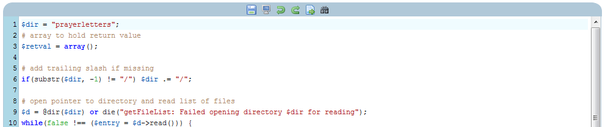
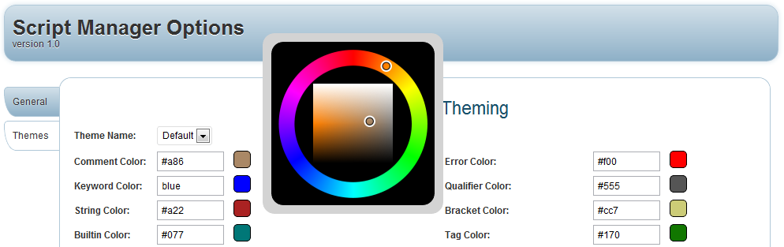

“WordPress Script Manager” Documentation by “Richard Guay” v1.0
“WordPress Script Manager”
Created: 2/28/2012
By: Richard Guay
Email: raguay@customct.com
Thank you for purchasing my plugin. If you have any questions that are beyond the scope of this help file, please feel free to email via my user page contact form here. Thanks so much!
This plugin gives you the power to take full control of your Word Press site. You can insert your custom scripts into any post, page, or widget area you want. You can also create actions and filters to further customize your Word Press site. There is nothing that can be done in another plugin that you cannot duplicate with Script Manager. You could even take the functionality of all your different plugins and put them into Script Manager.
Table of Contents
A) Installation - top
The plugin is installed like any other WordPress plugin. On the Admin Dashboard screen, go to the "Add New" submenu of the "Plugins" menu. Click the "upload" link just under the "Install Plugins" heading. Then click on "Choose file" button and find the file on your harddrive. Afterwards, click "Install Now". The plugin will be uploaded to your web site. The next screen will ask to "activate" or "return to plugins". Click the "activate" link and your new plugin will be working.
On the Admin menu (to the left of the screen), you will see a "Tools" menu. There will now be a "Script Manager" submenu. That will take you to the Script Manager.
On the Admin menu (to the left of the screen), you will see a "Settings" menu. Under the "Settings" menu, you will find the "Script Manager Options" submenu. That is where you will change settings for the Script Manager.
C) Basic Usage - top

To get started, simply select the language you want to use to make a script. Then select "New" button to the left of the script list area. You will have to give your script a name and then click the "New" button under the name. After the server acknowledges the new script name, you will see the new script name in the script list area. After selecting the script name, you can add your script into the program editor at the bottom. The program editor will highlight the program according to the language syntax. If you want to change the colors, please go to the options page for the Script Manager.
When you have the code you want, you can test most things with the "Test" button to the left of the script list area. This is an ajax call to WordPress to test your script. Therefore, some WordPress PHP functions will not be available.
To delete a script, simply select the script you no longer want and click the "Delete" button to the left of the script list area.
To rename a script, simply select the script you want to rename and click the "Rename" button to the left of the script list area. Then, simply supply the new name in the input area. Click on "Rename" button under the new name area to save the new name.
Script Editing
Script Manager allows you to add many types of scripts into your WordPress page, post, widget, etc. Currently, you can add custom HTML, PHP, JavaScript, CSS, or LESS scripts anywhere in your web site. We are looking to add even more language types in the future (Like Node, Ruby, Pearl, etc).
An HTML script is great for creating iframe code that WordPress will not remove from the post or page. This is great for encapsulating Google Maps, Facebook connection pages, or anything else that the HTML editor of WordPress likes to mess-up. Or, you can simply put code that you like to reuse on other pages.
The edit area has some buttons at the top as well. These buttons are to help you edit your code.
The first icon is the "Save" icon. When you are ready to save your current work, simply press the save icon. The wait indicator under the "Test" button to the left of the script list area will show up while waiting for the server.
The next icon is for full screen editing mode. That will make your edit area as big as possible on your current browser size. To make completely full screen, simply invoke full screen mode of your browser as well. Please make the browser full screen first, then your edit area.
The next icon is the "Undo" and "Redo" buttons. The "Undo" button will undo up to the last 10 edits. The "Redo" button simply recreates the last edits that were undone.
The next icon is the "Goto" button. When you press the "Goto" button, an input box will appear right above it. Put the line number you want to go to and re-click the "Goto" button. The cursor will immediately go to the specified line number and the input box will disappear.
The next icon is the search and replace button. When you click on it, an input area appears above the icon for putting in the search criteria. You can do normal searching or regular expression searching. Simply check the regular expression box for performing a regular expression search. Once you have your search criteria in the search box, press "find" to go to the first occurrence. If you want to replace it, put the string you want to replace it with in the replace box and click "Replace". If you want to replace all occurrences of that string, simply check the "all" box before pressing "Replace".
On HTML scripts, there are two more icons in the editor: Insert Code, and Highlight code. If you press the "Insert Code" icon, a pop-up will ask you for the language, script name, and parameters for the script. Then a shortcode for that script will be placed in your HTML script right where the cursor last was. The "Highlight Code" does the same, except the script will not be inserted, but the code will be inserted with the proper highlighting for that language. If "none" is selected, then the code highlight shortcode will be inserted with an open/close structure. All code in the middle will be displayed just like it came from the database. These buttons are also available on the TinyMCE and HTML editors for the add/edit pages, posts, etc.
Shortcodes and Widgets
This plugin comes with two shortcodes: "CodeInsert" and "CodeHighlight". These shortcodes are only available anywhere HTML is placed. If you define shortcodes inside of your HTML script, they will also be expanded. Please be careful to not have shortcode loops: shortcode that expands to the current shortcode that expands to the current shortcode.... That can very quickly kill your server.
Both shortcodes have the same inputs: "lang", "name", and "params". The "lang" parameter specifies the language of the script. It can be "HTML", "WPPHP", "JavaScript", "CSS", or "LESS". "WPPHP" is a PHP script that uses WordPress functions. Your PHP script does not have to have WordPress functions. We only make the distinction for future expanding to a PHP ajax call that does not load any WordPress functionality for speed. The "name" parameter specifies the name of the script. The "param" parameter allows you to add customization to a script call. For HTML, PHP, CSS, and LESS, whatever is in the "param" field is appended to the top of the script. JavaScript appends it to the bottom of the script. Most often, this will be used to set variables inside of your script.
On your widgets page, you now have a new widget called "Insert Script". Place this widget in any widget area, specify the parameters, and off you go. It is a very easy way to add scripts to any location your theme defines as a widget area.
Word Press Actions
WordPress allows you to expand and/or modify the behavior of WordPress by the use of Actions and Filters. The only difference between actions and filters is their basic functions. Actions can do anything, can have inputs, and can have outputs. Filters always has an input that your function is to modify and return. Actions can act like filters, but really filters cannot behave like Actions.
To add to a new Action, simply go to the Actions tab and click "New". You will be requested for the name of the action, the priority of the action (default is 10), and the arguments for the action. If that action, like 'wp_footer', does not have any arguments, simply leave that field blank. Click 'New' and you just added your new hook into a WordPress Action. Now select your new Action, add code in the code edit area, save, and you are now hooked in to a WordPress Action. Be careful, bad code will literally crash your web site. It is best to test such code on a local computer test site before using on the web itself.
Actions are processed like HTML. Therefore, you can add anything that you can write HTML for: insert PHP code, insert JavaScript Code, use any WordPress shortcode, or just HTML. The arguments are inserted by using the PHP inserting HTML tag.
Word Press Filters
WordPress allows you to expand and/or modify the behavior of WordPress by the use of Actions and Filters. The only difference between actions and filters is their basic functions. Actions can do anything, can have inputs, and can have outputs. Filters always has an input that your function is to modify and return. Actions can act like filters, but really filters cannot behave like Actions.
To add to a new Filter, simply go to the Filters tab and click "New". You will be requested for the name of the filter, the priority of the filter (default is 10), and the arguments for the filter. Click 'New' and you just added your new hook into a WordPress Filter. Now select your new Filter, add code in the code edit area, save, and you are now hooked in to a WordPress Filter. Be careful, bad code will literally crash your web site. It is best to test such code on a local computer test site before using on the web itself.
Filters are processed as PHP functions. Treat the script area as the body of a function with a return at the end of the script.
Customizing with Options Screen
The Script Manager has many options that you can configure. These options allow you to customize the Script Manager to your particular installation. The options are in two category: General and Theme. The General options allow you to configure how Script Manager works. The Theme options allow you to configure how the editor and code formatter looks.
The General options currently has one thing to configure: Execution directory. This is the directory in which the scripts will be executed. Therefore, if you want links in your web site for files in a particular directory, your script will always know what directory you are executing the script. This helps to protect location of administration files and gives consistency to the execution of the scripts. For instance, the execution directory for ajax calls in WordPress is different from normal calls.
The Theme options page allows you to change the color of the code highlighting in the editor and code highlighting shortcode. Therefore, you can change the colorization to match what you like, or the coloring of your web site.
To change the color, just put the hex value of the color in the input area in front of the type of code you want to changed. Make sure you remember the '#' symbol in front of the hex number. When you change the number and exit the input area, the color to the right of the value will change to the color you indicated. If you click color area, a graphical color picker with pop-up for changing the color value. Clicking the color box again, or a different color box, will close that color picker.
Conclusion
That is how to use the Script Manager Plugin in a nut shell. You can learn so much more by reading the tutorials. Have fun coding!
D) More Information - top
You can find more information for Script Manager on our web site Custom Computer Tools. You will find:
Once again, thank you so much for purchasing this WordPress plugin. As I said at the beginning, I'd be glad to help you if you have any questions relating to this plugin. No guarantees, but I'll do my best to assist. If you have a more general question relating to the plugin on CodeCanyon, you might consider visiting the forums and asking your question in the "Item Discussion" section. I also have extensive documention, FAQ, forums, and tutorial on my home web site Custom Computer Tools.
Richard Guay